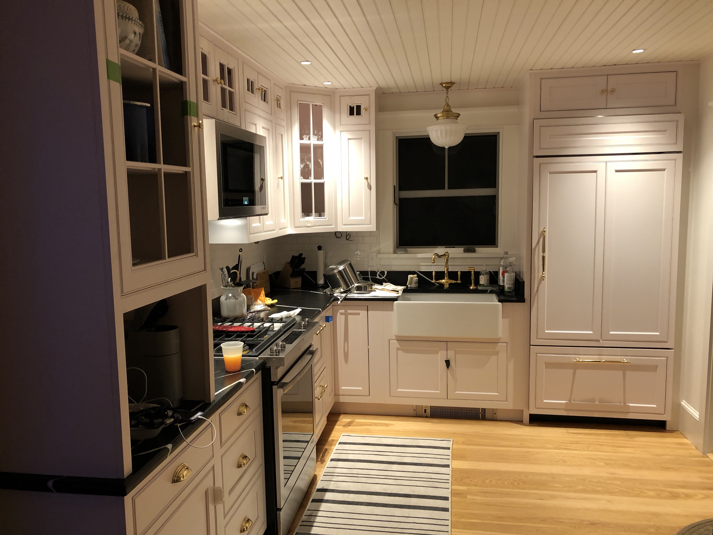
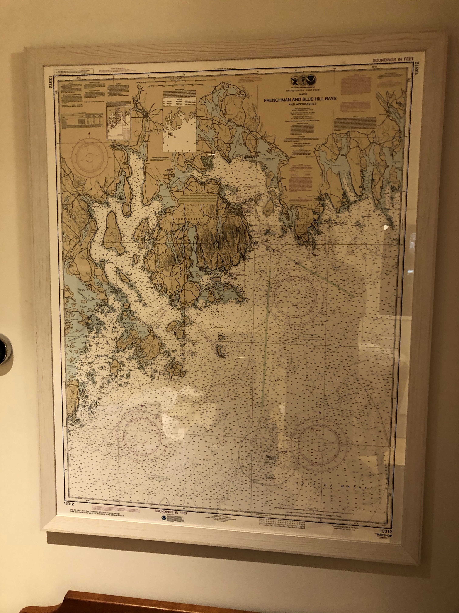

Restored family heirloom, "pond yacht", Paralus with print of Central Park model boat pond in the background, where it was sailed.Entryway chandelier. Evocative of an sundial, with the arrow pointing north.
Living room
Evening view of living room sitting area.View from sitting area out back window to Eastern Passage, Placentia island and mountains of Acadia.Bookcase has a variety of books about coastal Maine history, trail guides and history for Acadia National Park as well as a small selection of board games, puzzles and a Lego Ducati V4R kitPorsche 911 RSR for rainy days.This hutch solves some of our limited storage. If you can't find something, check in here.Mix of art and function with a 65" OLED TV framed by an ash table from the artist Gail Fredell, entitled Spud Point. Woodstove in use. It doesn't take much wood to heat the place.....
Dining Nook
Perfect space for a birthday party!...or as a workspace for tele-commuting.
Kitchen
Cabinets, counters, range, dishwashing drawers and sink all in and functional.

Updated view with microwave installed and panels on refrigerator and dishwasher drawers.
Bathroom, first floor
Panoramic view of bathroom showing tub, sink and layout.Tub and towel "ladder".Sink base made from quasi-antique bureau.
Master bedroom
Peek into the master bedroom.Waking up view of the Eastern Passage and Placentia Island.Original Eames chair and oriental rug, both family heirlooms with a new home.Built in reading lights!
Guest bedroom
View out the front of house.Queen size bed awaits guests.
Bathroom, second floor
View of the mountains of Acadia across Blue Hill Bay.Large walk in shower with "sunflower" shower head.Overhead light in vaulted ceiling meant to be evocative of a supernova, big bang or other celestial event as a reference to incredibly dark skies and vast star field viewable from the island.Full size washer/dryer ready for action.
Deck
View of the Eastern Passage from back of the deck.Grill on west side of deck.Seating area with comfy sofa, chairs and table.Lounge chairs on south side of deck, modeled by Brayden.Fire pit made from four pieces of plate steel, interlocked together.
Basement
Essential provisions.Shelving with items not readily stored upstairs. Includes tool boxes, spare life jacket, some cook pots and other misc gear.
Art of the Cloud House
Painting on left is original oil by Nathan Ward of the Cloud House. The painting on the right is an original oil of Port Clyde waterfront from Somesville gallery. Flag flown from Robert Dobbins' sloop Revenge, a 28' sailboat, on his transatlantic voyage in 1985. Half model is of the same boat.

More reference than art, This is a nautical map of the area surrounding Swan's Island and an excellent starting point for contempating off island destinations.
1904 topography map of Swan's Island.Mermaid by island artist Laurel Lemoine.Lumpfish glazed porcelain by local artist Christine Dentremont.Original watercolor of Swan's Island coastline.Whale carved by Jerry Sytsma from cap rail of schooner Boyd N. Sheppard with stone base from beach of Swan's Island.Shorebird carved fron beach wood by Jerry Sytsma, with stone base fron Swan's Island.Calligraphy "E" by local artist Laurel Lemoine.Bronze bust of Joshua Chamberlain, Colonel and commander of 20th Maine Regiment at the battle of Gettysburg, Governor of Maine (1866-70).1/700 scale model of British battleship Prince of Wales, December 1941.Wooden model of a Hudson river sloop built as a child by Ephraim Dobbins, circa 1970, and sailed in the Central Park boat pond.Original lithograph of Mt. Desert Rock. Wooden toy tug boat made by Robert Dobbins, circa mid 1960's.

{kind=link}
{kind=link}


{kind=link}


{kind=link}
{kind=link}
{kind=link}